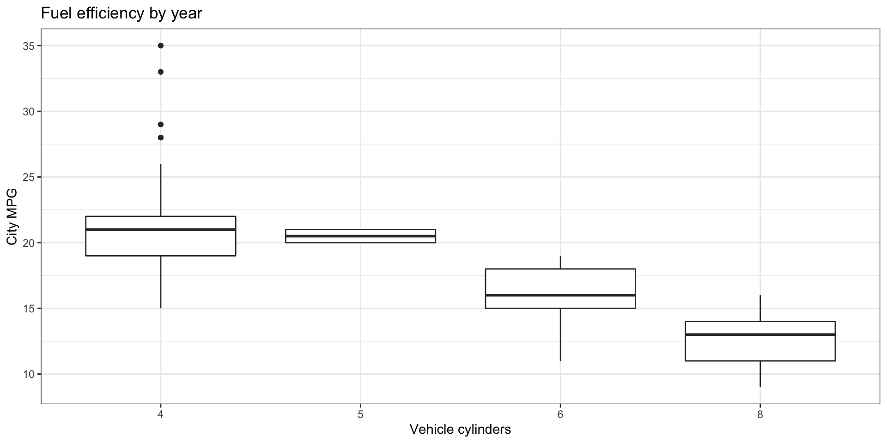
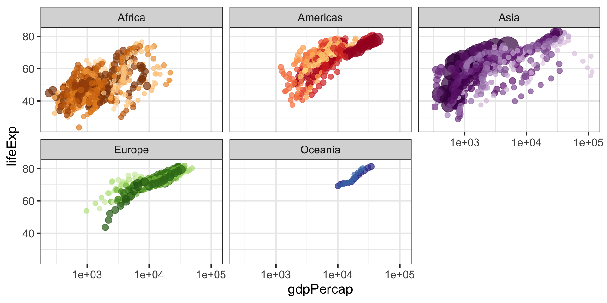

ggplot2
Duke University
included in the tidyverse package
Blank canvas

x and y aesthetics

add a geometry

add theme and color aesthetic
penguins %>%
ggplot(aes(x = flipper_length_mm, y = bill_depth_mm,
color = island)) +
geom_point() +
labs(x = "Flipper length (mm)", y = "Bill depth (mm)",
color = "Island",
title = "Bill depth vs flipper length distribution",
subtitle = "Penguins from the arctic",
caption = "data from palmerpenguins R package") +
theme_bw()
Continuous and discrete variables
Aesthetics for continuous and discrete variables are measured on continuous and discrete scales, respectively.
Rows: 234
Columns: 11
$ manufacturer <chr> "audi", "audi", "audi", "audi", "audi", "audi", "audi", "…
$ model <chr> "a4", "a4", "a4", "a4", "a4", "a4", "a4", "a4 quattro", "…
$ displ <dbl> 1.8, 1.8, 2.0, 2.0, 2.8, 2.8, 3.1, 1.8, 1.8, 2.0, 2.0, 2.…
$ year <int> 1999, 1999, 2008, 2008, 1999, 1999, 2008, 1999, 1999, 200…
$ cyl <int> 4, 4, 4, 4, 6, 6, 6, 4, 4, 4, 4, 6, 6, 6, 6, 6, 6, 8, 8, …
$ trans <chr> "auto(l5)", "manual(m5)", "manual(m6)", "auto(av)", "auto…
$ drv <chr> "f", "f", "f", "f", "f", "f", "f", "4", "4", "4", "4", "4…
$ cty <int> 18, 21, 20, 21, 16, 18, 18, 18, 16, 20, 19, 15, 17, 17, 1…
$ hwy <int> 29, 29, 31, 30, 26, 26, 27, 26, 25, 28, 27, 25, 25, 25, 2…
$ fl <chr> "p", "p", "p", "p", "p", "p", "p", "p", "p", "p", "p", "p…
$ class <chr> "compact", "compact", "compact", "compact", "compact", "c…

Themes
image credit:
tvthemespackage by Ryo NakagawraSee https://ggplot2.tidyverse.org/reference/ggtheme.html for a list of default themes.
Save the plot
- Save a plot as a file on your computer with
ggsave()

Annotate

Patchwork
p1 = penguins %>%
ggplot(aes(x = species, y = bill_depth_mm)) +
geom_violin() +
labs(x = "Species", y = "Bill depth (mm)",
title = "Violin plots")
p2 = penguins %>%
ggplot(aes(x = bill_depth_mm, y = flipper_length_mm, color = island)) +
geom_point() +
labs(x ="Bill depth (mm)",
y = "Flipper length (mm)",
color = "Island",
title = "Flipper length vs bill depth")
p3 = penguins %>%
ggplot(aes(x = body_mass_g)) +
geom_histogram(fill = "steelblue") +
labs(x = "Body mass (g)",
y = "Count",
title = "Distribution of penguin body mass")
(p1 + p2) / p3
Patchwork layout

gganimate example

ggplot(gapminder, aes(x = gdpPercap, y = lifeExp, size = pop, colour = country)) +
geom_point(alpha = 0.7, show.legend = FALSE) +
scale_colour_manual(values = country_colors) +
scale_size(range = c(2, 12)) +
scale_x_log10() +
facet_wrap(~continent) +
theme_bw(base_size = 16) +
labs(title = 'Year: {frame_time}', x = 'GDP per capita', y = 'Life expectancy') +
transition_time(year) +
ease_aes('linear')
LaTeX labels